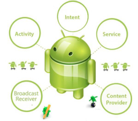
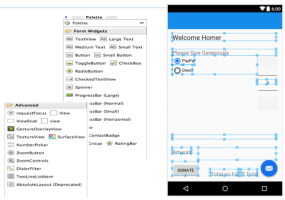

Assignments
Assignment-1
Assignment-2
Module Overview & Background
Module Overview
App Design
Overview & Tools
Android Overview
Android Anatomy
Donation - "A First Look"
Lab-01
Lab-02
Using Android Studio
Overview & Tools
David Drohan, WIT
Android Overview
Android Anatomy

Donation - "A First Look"

Lab-01
Lab-02
Using Android Studio